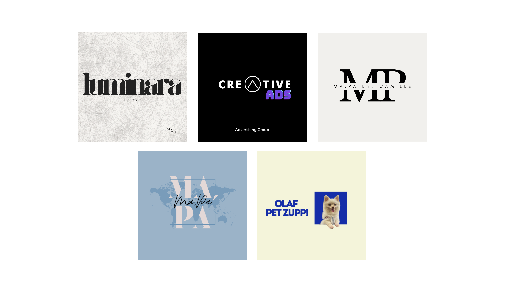

PORTFOLIO
Camille Joy

Results-driven Marketing Professional experienced in handling multi-brand campaigns, driving brand visibility, and delivering business growth through strategic, creative, and data-driven marketing. Passionate about social media, branding, influencer collaborations, and creating meaningful digital experiences.
A selection of campaigns, branding, social media creatives, and marketing projects.



A walkthrough of my UI/UX design process, showcasing user interface concepts, prototypes, interactions, and visual design explorations.
Design and develop user-centered websites and mobile application interfaces, transforming ideas into intuitive and visually engaging digital experiences. Create wireframes, user flows, high-fidelity prototypes, and responsive designs while collaborating with clients to ensure usability, accessibility, and alignment with business goals.
Develop and execute strategic marketing campaigns that strengthen brand presence and drive sales. Design and develop websites and landing pages to support digital marketing initiatives, while managing influencer collaborations, social media, product launches, and e-commerce. Analyze market trends and campaign performance to continuously optimize engagement, conversions, and overall marketing effectiveness.
Handled six brands including Royaltea, K-Cross, The Beauty Corner, Cassie Montealegre, Gluta Estetica, and Forever Collagen. Developed digital content strategies, managed photoshoots, created engaging content, and increased social media visibility and engagement.
Supported reseller and retailer relationships, assisted in sales operations and customer service, and contributed to promotional campaigns that strengthened partner engagement and achieved sales targets.
Created engaging content, managed social media accounts, and conducted market research for multiple brands. Supported marketing campaigns to improve brand visibility, audience engagement, and overall campaign performance.
Digital Media Specialist
Quadx Inc.
📧 jpfragada@quadx.xyz
QA Specialist
Manulife Financial Corporation
📞 09763075556